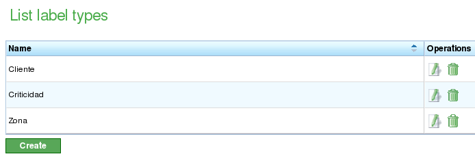

Etiquetas
Contents
As etiquetas são entidades utilizadas no programa para organizar conceitualmente tarefas ou elementos de pedido.
As etiquetas são categorizadas de acordo com o tipo de etiqueta. Uma etiqueta só pode pertencer a um tipo de etiqueta; no entanto, os usuários podem criar muitas etiquetas semelhantes pertencentes a diferentes tipos de etiquetas.
Tipos de Etiquetas
Os tipos de etiquetas são utilizados para agrupar os tipos de etiquetas que os usuários desejam gerenciar no programa. Aqui estão alguns exemplos de possíveis tipos de etiquetas:
- Cliente: Os usuários podem estar interessados em etiquetar tarefas, pedidos ou elementos de pedido em relação ao cliente que os solicita.
- Área: Os usuários podem estar interessados em etiquetar tarefas, pedidos ou elementos de pedido em relação às áreas em que são executados.
A administração de tipos de etiquetas é gerenciada a partir da opção de menu "Administração". É aqui que os usuários podem editar tipos de etiquetas, criar novos tipos de etiquetas e adicionar etiquetas a tipos de etiquetas. Os usuários podem acessar a lista de etiquetas a partir desta opção.

Lista de Tipos de Etiquetas
A partir da lista de tipos de etiquetas, os usuários podem:
- Criar um novo tipo de etiqueta.
- Editar um tipo de etiqueta existente.
- Excluir um tipo de etiqueta com todas as suas etiquetas.
A edição e criação de etiquetas compartilham o mesmo formulário. A partir deste formulário, o usuário pode atribuir um nome ao tipo de etiqueta, criar ou excluir etiquetas e salvar as alterações. O procedimento é o seguinte:
- Selecione uma etiqueta para editar ou clique no botão de criação para uma nova.
- O sistema exibe um formulário com uma entrada de texto para o nome e uma lista de entradas de texto com etiquetas existentes e atribuídas.
- Se os usuários desejarem adicionar uma nova etiqueta, devem clicar no botão "Nova etiqueta".
- O sistema exibe uma nova linha na lista com uma caixa de texto vazia que os usuários devem editar.
- Os usuários inserem um nome para a etiqueta.
- O sistema adiciona o nome à lista.
- Os usuários clicam em "Salvar" ou "Salvar e continuar" para continuar a editar o formulário.

Edição de Tipos de Etiquetas
Etiquetas
As etiquetas são entidades que pertencem a um tipo de etiqueta. Essas entidades podem ser atribuídas a elementos de pedido. Atribuir uma etiqueta a um elemento de pedido significa que todos os elementos descendentes deste elemento herdarão a etiqueta à qual pertencem. Ter uma etiqueta atribuída significa que essas entidades podem ser filtradas onde pesquisas podem ser realizadas:
- Pesquisa de tarefas no diagrama de Gantt.
- Pesquisa de elementos de pedido na lista de elementos de pedido.
- Filtros para relatórios.
A atribuição de etiquetas a elementos de pedido é abordada no capítulo sobre pedidos.